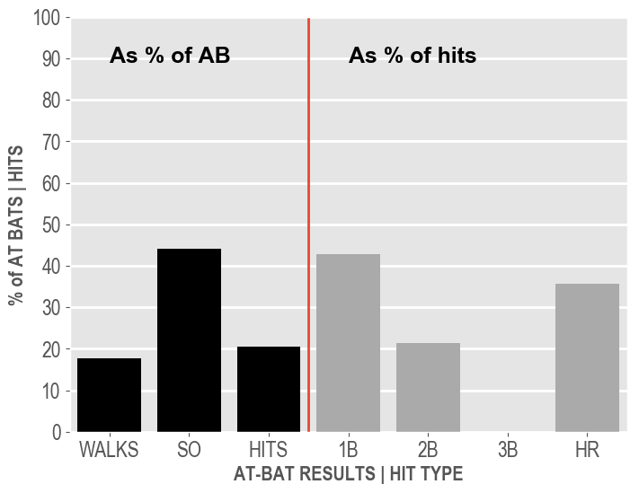
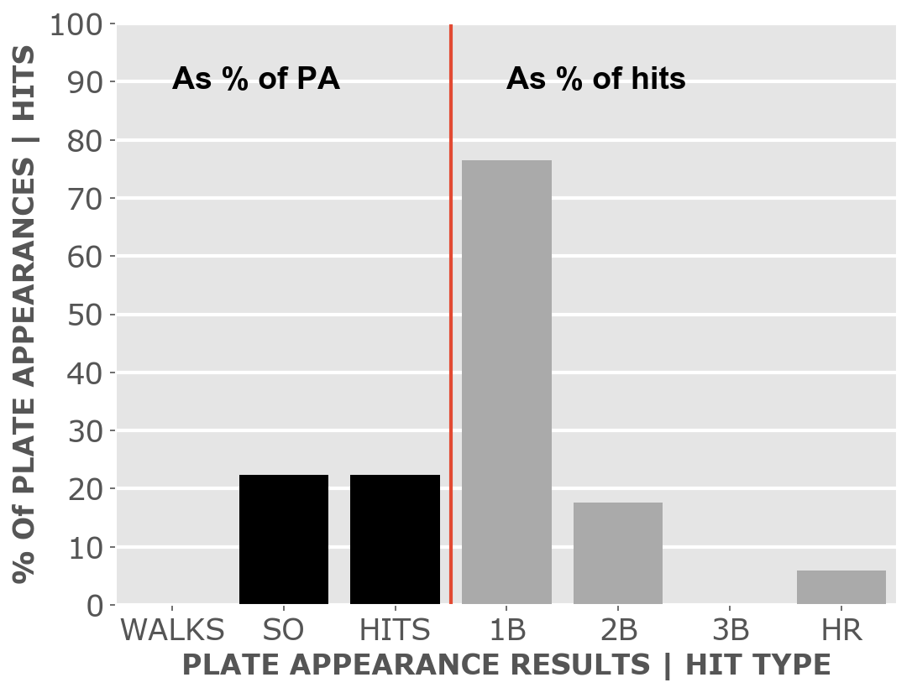
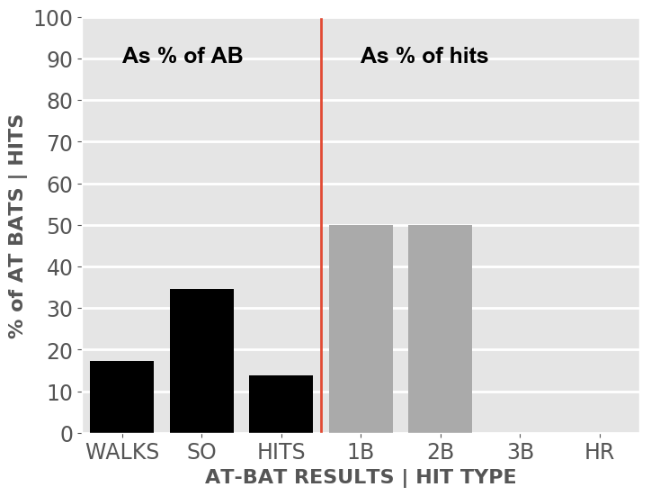
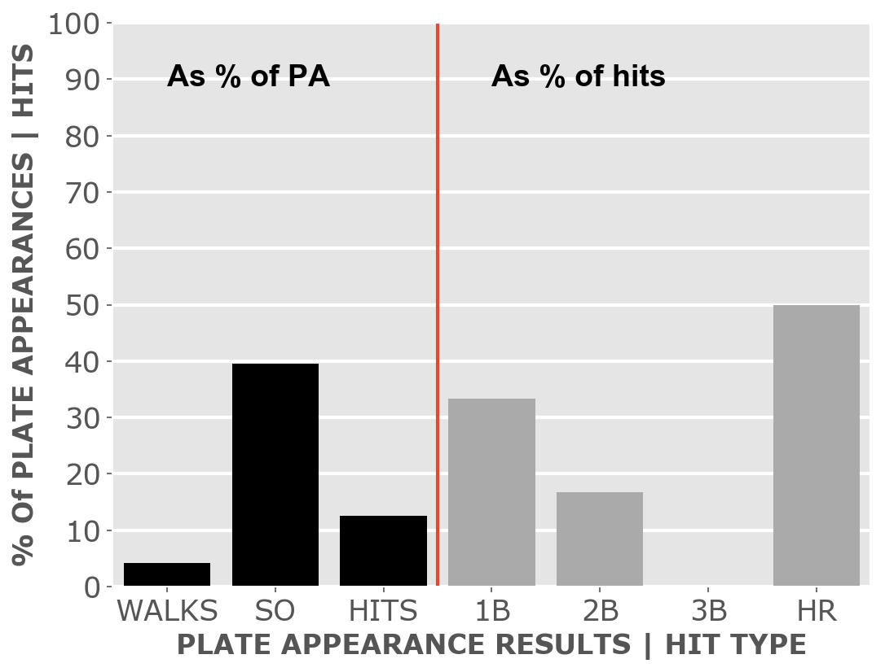

Baseball 2018
White Sox
A little-more-than-casual but not-very-wonky statistical look at the current season
Plenty of seats available to watch the kids learn how to play in the big league.
Updated Monday, April 23, at 9:42 a.m. Pybaseball gathers these from Baseball-reference.com.
Games
JUMP TO TOP | BATTERS | PITCHERS
On Sunday, Apr 22, the Sox lost a day game at home against the Astros, 1 to 7, in 9 innings. The winning pitcher was McCullers, losing pitcher was Bummer. Save: None. Next scheduled game: Monday, Apr 23, a night game at home with the Mariners.
Summary results by team
| Team | Wins | Loses | Avg. Sox runs | Avg. runs against |
| Astros |
0 |
3 |
0.67 |
9.0 |
| Athletics |
0 |
3 |
4.67 |
10.0 |
| Blue Jays |
1 |
2 |
3.67 |
7.0 |
| Rays |
1 |
2 |
3.67 |
4.0 |
| Royals |
2 |
0 |
9.0 |
5.0 |
| Tigers |
0 |
3 |
2.67 |
5.33 |
| Twins |
0 |
1 |
0.0 |
4.0 |
Batters
JUMP TO TOP | GAMES | PITCHERS
Click the link under a player's name to get up-to-speed on a player at bat.
| Status (A = active) | A |
| Bats/Throws | R/R |
| At bats | 73 |
| Hits | 20 |
| Home runs | 4 |
| Batting Avg. | 0.274 |

| Runs | 9 |
| RBI | 9 |
| On-base percent | 0.346 |
| Weighted OBP | 0.364 |
| Slugging % | 0.479 |
| Stolen bases | 0 |
| Caught stealing | 0 |
Other measures
| Weighted runs above avg. | 3.2 |
| Runs Above Replacement | 2.5 |
| Fielding % | -0.5 |
| WAR | 0.3 |
| Status (A = active) | A |
| Bats/Throws | R/R |
| At bats | 67 |
| Hits | 16 |
| Home runs | 3 |
| Batting Avg. | 0.239 |

| Runs | 9 |
| RBI | 5 |
| On-base percent | 0.311 |
| Weighted OBP | 0.317 |
| Slugging % | 0.403 |
| Stolen bases | 8 |
| Caught stealing | 0 |
Other measures
| Weighted runs above avg. | 0.2 |
| Runs Above Replacement | 4.6 |
| Fielding % | -0.7 |
| WAR | 0.5 |
| Status (A = active) | A |
| Bats/Throws | R/R |
| At bats | 43 |
| Hits | 10 |
| Home runs | 2 |
| Batting Avg. | 0.233 |

| Runs | 4 |
| RBI | 4 |
| On-base percent | 0.313 |
| Weighted OBP | 0.333 |
| Slugging % | 0.442 |
| Stolen bases | 0 |
| Caught stealing | 0 |
Other measures
| Weighted runs above avg. | 0.7 |
| Runs Above Replacement | 1.0 |
| Fielding % | -1.0 |
| WAR | 0.1 |
| Status (A = active) | A |
| Bats/Throws | R/R |
| At bats | 58 |
| Hits | 12 |
| Home runs | 5 |
| Batting Avg. | 0.207 |

| Runs | 11 |
| RBI | 11 |
| On-base percent | 0.352 |
| Weighted OBP | 0.373 |
| Slugging % | 0.5 |
| Stolen bases | 0 |
| Caught stealing | 0 |
Other measures
| Weighted runs above avg. | 3.3 |
| Runs Above Replacement | 3.1 |
| Fielding % | |
| WAR | 0.3 |
| Status (A = active) | A |
| Bats/Throws | R/R |
| At bats | 45 |
| Hits | 7 |
| Home runs | 0 |
| Batting Avg. | 0.156 |

| Runs | 1 |
| RBI | 4 |
| On-base percent | 0.25 |
| Weighted OBP | 0.208 |
| Slugging % | 0.178 |
| Stolen bases | 1 |
| Caught stealing | 0 |
Other measures
| Weighted runs above avg. | -4.4 |
| Runs Above Replacement | -4.4 |
| Fielding % | -2.0 |
| WAR | -0.5 |
| Status (A = active) | A |
| Bats/Throws | R/R |
| At bats | 71 |
| Hits | 16 |
| Home runs | 1 |
| Batting Avg. | 0.225 |

| Runs | 5 |
| RBI | 3 |
| On-base percent | 0.243 |
| Weighted OBP | 0.244 |
| Slugging % | 0.31 |
| Stolen bases | 0 |
| Caught stealing | 1 |
Other measures
| Weighted runs above avg. | -4.1 |
| Runs Above Replacement | -5.2 |
| Fielding % | -1.3 |
| WAR | -0.5 |
| Status (A = active) | A |
| Bats/Throws | S/R |
| At bats | 35 |
| Hits | 7 |
| Home runs | 0 |
| Batting Avg. | 0.2 |

| Runs | 4 |
| RBI | 3 |
| On-base percent | 0.282 |
| Weighted OBP | 0.243 |
| Slugging % | 0.229 |
| Stolen bases | 4 |
| Caught stealing | 0 |
Other measures
| Weighted runs above avg. | -2.2 |
| Runs Above Replacement | 0.4 |
| Fielding % | 0.9 |
| WAR | 0.0 |
| Status (A = active) | A |
| Bats/Throws | S/R |
| At bats | 70 |
| Hits | 15 |
| Home runs | 3 |
| Batting Avg. | 0.214 |

| Runs | 10 |
| RBI | 9 |
| On-base percent | 0.329 |
| Weighted OBP | 0.327 |
| Slugging % | 0.4 |
| Stolen bases | 4 |
| Caught stealing | 0 |
Other measures
| Weighted runs above avg. | 0.8 |
| Runs Above Replacement | 6.9 |
| Fielding % | 1.1 |
| WAR | 0.7 |
| Status (A = active) | A |
| Bats/Throws | L/R |
| At bats | 25 |
| Hits | 4 |
| Home runs | 0 |
| Batting Avg. | 0.16 |

| Runs | 1 |
| RBI | 1 |
| On-base percent | 0.3 |
| Weighted OBP | 0.26 |
| Slugging % | 0.24 |
| Stolen bases | 0 |
| Caught stealing | 2 |
Other measures
| Weighted runs above avg. | -1.3 |
| Runs Above Replacement | 0.3 |
| Fielding % | 1.0 |
| WAR | 0.0 |
| Status (A = active) | A |
| Bats/Throws | S/R |
| At bats | 61 |
| Hits | 17 |
| Home runs | 1 |
| Batting Avg. | 0.279 |

| Runs | 4 |
| RBI | 10 |
| On-base percent | 0.343 |
| Weighted OBP | 0.342 |
| Slugging % | 0.443 |
| Stolen bases | 1 |
| Caught stealing | 0 |
Other measures
| Weighted runs above avg. | 1.5 |
| Runs Above Replacement | 4.7 |
| Fielding % | 1.5 |
| WAR | 0.5 |
| Status (A = active) | A |
| Bats/Throws | R/R |
| At bats | 12 |
| Hits | 2 |
| Home runs | 1 |
| Batting Avg. | 0.167 |

| Runs | 2 |
| RBI | 1 |
| On-base percent | 0.167 |
| Weighted OBP | 0.248 |
| Slugging % | 0.417 |
| Stolen bases | 0 |
| Caught stealing | 0 |
Other measures
| Weighted runs above avg. | -0.6 |
| Runs Above Replacement | 0.6 |
| Fielding % | 0.7 |
| WAR | 0.1 |
Pitchers
JUMP TO TOP | GAMES | BATTERS
Click the link under a player's name to get acquainted with who's on the mound. Click here for a description of these stats and more.
| Status (A = active) | A |
| Bats/Throws | L/L |
| Wins | 0 |
| Losses | 0 |
| ERA | 5.4 |
| Caught stealing | 0 |
| Complete games | 0 |
| Shutouts | 0 |
| Saves | 0 |
| Blown saves | 1 |
| Average innings pitched | 0.6 |
| Hits | 8 |
| Runs | 7 |
| Earned runs | 4 |
| Home runs | 1 |
| Walks | 5 |
| Hit batters | 0 |
| Balks | 0 |
| Strike outs | 8 |
| Balls | 63 |
| Strikes | 91 |
| Pitches | 154 |
| Strikeouts per 9 innings | 10.8 |
| Walks per 9 innings | 6.75 |
| Percent strikeouts | 23.5 |
| Percent walks | 14.7 |
| Percent left on base | 51.7 |
| Percent first pitch strike | 55.9 |
Pitch types
| Four Seam and Unclassified Fastballs | |
| Two Seam Fastballs | 35.1 |
| Cutters | |
| Split Fingers | |
| Forkballs | |
| Sinkers | |
| Sliders | |
| Curveballs | 15.6 |
| Knuckle-Curves | |
| Ephesuses - really slow ball | |
| Changeups | 49.4 |
| Screwballs | |
| Knuckleballs | |
| Unknowns | |
| Wild pitches | 0 |
Other measures
| Avg. run support | 1.0 |
| Opponents batting average | 0.276 |
| Walks, hits per inning (WHIP) | 1.95 |
| Batting avg. on balls in play | 0.35 |
| Fielding independent pitching | 4.96 |
| Win probability added (WPA) | -0.55 |
| Runs above replacement | -0.5 |
| WAR | 0.0 |
| Status (A = active) | A |
| Bats/Throws | L/L |
| Wins | 0 |
| Losses | 1 |
| ERA | 6.75 |
| Caught stealing | 0 |
| Complete games | 0 |
| Shutouts | 0 |
| Saves | 0 |
| Blown saves | 1 |
| Average innings pitched | 0.6 |
| Hits | 11 |
| Runs | 5 |
| Earned runs | 5 |
| Home runs | 0 |
| Walks | 2 |
| Hit batters | 0 |
| Balks | 0 |
| Strike outs | 8 |
| Balls | 58 |
| Strikes | 95 |
| Pitches | 153 |
| Strikeouts per 9 innings | 10.8 |
| Walks per 9 innings | 2.7 |
| Percent strikeouts | 23.5 |
| Percent walks | 5.9 |
| Percent left on base | 61.5 |
| Percent first pitch strike | 41.2 |
Pitch types
| Four Seam and Unclassified Fastballs | 12.4 |
| Two Seam Fastballs | |
| Cutters | |
| Split Fingers | |
| Forkballs | |
| Sinkers | 69.3 |
| Sliders | 18.3 |
| Curveballs | |
| Knuckle-Curves | |
| Ephesuses - really slow ball | |
| Changeups | |
| Screwballs | |
| Knuckleballs | |
| Unknowns | |
| Wild pitches | 2 |
Other measures
| Avg. run support | 5.0 |
| Opponents batting average | 0.344 |
| Walks, hits per inning (WHIP) | 1.95 |
| Batting avg. on balls in play | 0.458 |
| Fielding independent pitching | 1.66 |
| Win probability added (WPA) | -0.71 |
| Runs above replacement | 1.9 |
| WAR | 0.2 |
| Status (A = active) | D10 |
| Bats/Throws | R/R |
| Wins | 1 |
| Losses | 1 |
| ERA | 5.63 |
| Caught stealing | 0 |
| Complete games | 0 |
| Shutouts | 0 |
| Saves | 0 |
| Blown saves | 1 |
| Average innings pitched | 1.0 |
| Hits | 6 |
| Runs | 5 |
| Earned runs | 5 |
| Home runs | 3 |
| Walks | 0 |
| Hit batters | 0 |
| Balks | 0 |
| Strike outs | 9 |
| Balls | 39 |
| Strikes | 77 |
| Pitches | 116 |
| Strikeouts per 9 innings | 10.13 |
| Walks per 9 innings | 0.0 |
| Percent strikeouts | 31.0 |
| Percent walks | 0.0 |
| Percent left on base | 55.6 |
| Percent first pitch strike | 55.2 |
Pitch types
| Four Seam and Unclassified Fastballs | 56.9 |
| Two Seam Fastballs | |
| Cutters | |
| Split Fingers | |
| Forkballs | |
| Sinkers | |
| Sliders | |
| Curveballs | 7.8 |
| Knuckle-Curves | |
| Ephesuses - really slow ball | |
| Changeups | 35.3 |
| Screwballs | |
| Knuckleballs | |
| Unknowns | |
| Wild pitches | 1 |
Other measures
| Avg. run support | 4.0 |
| Opponents batting average | 0.207 |
| Walks, hits per inning (WHIP) | 0.75 |
| Batting avg. on balls in play | 0.176 |
| Fielding independent pitching | 5.78 |
| Win probability added (WPA) | -0.19 |
| Runs above replacement | -1.3 |
| WAR | -0.1 |
| Status (A = active) | A |
| Bats/Throws | R/R |
| Wins | 0 |
| Losses | 1 |
| ERA | 7.5 |
| Caught stealing | 3 |
| Complete games | 0 |
| Shutouts | 0 |
| Saves | 0 |
| Blown saves | 0 |
| Average innings pitched | 3.0 |
| Hits | 17 |
| Runs | 12 |
| Earned runs | 10 |
| Home runs | 2 |
| Walks | 9 |
| Hit batters | 2 |
| Balks | 1 |
| Strike outs | 12 |
| Balls | 97 |
| Strikes | 138 |
| Pitches | 235 |
| Strikeouts per 9 innings | 9.0 |
| Walks per 9 innings | 6.75 |
| Percent strikeouts | 18.5 |
| Percent walks | 13.9 |
| Percent left on base | 63.5 |
| Percent first pitch strike | 50.8 |
Pitch types
| Four Seam and Unclassified Fastballs | 48.9 |
| Two Seam Fastballs | |
| Cutters | 28.5 |
| Split Fingers | |
| Forkballs | |
| Sinkers | |
| Sliders | |
| Curveballs | 4.7 |
| Knuckle-Curves | |
| Ephesuses - really slow ball | |
| Changeups | 17.9 |
| Screwballs | |
| Knuckleballs | |
| Unknowns | |
| Wild pitches | 1 |
Other measures
| Avg. run support | 9.0 |
| Opponents batting average | 0.315 |
| Walks, hits per inning (WHIP) | 2.17 |
| Batting avg. on balls in play | 0.375 |
| Fielding independent pitching | 6.07 |
| Win probability added (WPA) | -0.52 |
| Runs above replacement | -0.9 |
| WAR | -0.1 |
| Status (A = active) | A |
| Bats/Throws | R/R |
| Wins | 0 |
| Losses | 3 |
| ERA | 9.0 |
| Caught stealing | 4 |
| Complete games | 0 |
| Shutouts | 0 |
| Saves | 0 |
| Blown saves | 0 |
| Average innings pitched | 5.0 |
| Hits | 18 |
| Runs | 21 |
| Earned runs | 20 |
| Home runs | 1 |
| Walks | 19 |
| Hit batters | 4 |
| Balks | 0 |
| Strike outs | 9 |
| Balls | 170 |
| Strikes | 188 |
| Pitches | 358 |
| Strikeouts per 9 innings | 4.05 |
| Walks per 9 innings | 8.55 |
| Percent strikeouts | 9.1 |
| Percent walks | 19.2 |
| Percent left on base | 50.5 |
| Percent first pitch strike | 45.5 |
Pitch types
| Four Seam and Unclassified Fastballs | 57.4 |
| Two Seam Fastballs | 8.4 |
| Cutters | |
| Split Fingers | |
| Forkballs | |
| Sinkers | |
| Sliders | 12.0 |
| Curveballs | 7.0 |
| Knuckle-Curves | |
| Ephesuses - really slow ball | |
| Changeups | 15.1 |
| Screwballs | |
| Knuckleballs | |
| Unknowns | |
| Wild pitches | 2 |
Other measures
| Avg. run support | 1.0 |
| Opponents batting average | 0.237 |
| Walks, hits per inning (WHIP) | 1.85 |
| Batting avg. on balls in play | 0.258 |
| Fielding independent pitching | 6.36 |
| Win probability added (WPA) | -0.66 |
| Runs above replacement | -1.1 |
| WAR | -0.1 |
| Status (A = active) | D10 |
| Bats/Throws | R/R |
| Wins | 0 |
| Losses | 3 |
| ERA | 12.41 |
| Caught stealing | 3 |
| Complete games | 0 |
| Shutouts | 0 |
| Saves | 0 |
| Blown saves | 0 |
| Average innings pitched | 4.0 |
| Hits | 24 |
| Runs | 18 |
| Earned runs | 17 |
| Home runs | 4 |
| Walks | 6 |
| Hit batters | 0 |
| Balks | 0 |
| Strike outs | 5 |
| Balls | 97 |
| Strikes | 161 |
| Pitches | 258 |
| Strikeouts per 9 innings | 3.65 |
| Walks per 9 innings | 4.38 |
| Percent strikeouts | 7.6 |
| Percent walks | 9.1 |
| Percent left on base | 49.2 |
| Percent first pitch strike | 57.6 |
Pitch types
| Four Seam and Unclassified Fastballs | 37.0 |
| Two Seam Fastballs | 10.5 |
| Cutters | |
| Split Fingers | |
| Forkballs | |
| Sinkers | |
| Sliders | 22.2 |
| Curveballs | 12.1 |
| Knuckle-Curves | |
| Ephesuses - really slow ball | |
| Changeups | 18.3 |
| Screwballs | |
| Knuckleballs | |
| Unknowns | |
| Wild pitches | 1 |
Other measures
| Avg. run support | 5.0 |
| Opponents batting average | 0.4 |
| Walks, hits per inning (WHIP) | 2.43 |
| Batting avg. on balls in play | 0.392 |
| Fielding independent pitching | 8.02 |
| Win probability added (WPA) | -0.94 |
| Runs above replacement | -3.7 |
| WAR | -0.3 |
| Status (A = active) | A |
| Bats/Throws | R/R |
| Wins | 0 |
| Losses | 1 |
| ERA | 9.82 |
| Caught stealing | 0 |
| Complete games | 0 |
| Shutouts | 0 |
| Saves | 0 |
| Blown saves | 0 |
| Average innings pitched | 0.9 |
| Hits | 10 |
| Runs | 8 |
| Earned runs | 8 |
| Home runs | 0 |
| Walks | 5 |
| Hit batters | 0 |
| Balks | 0 |
| Strike outs | 6 |
| Balls | 49 |
| Strikes | 72 |
| Pitches | 121 |
| Strikeouts per 9 innings | 7.36 |
| Walks per 9 innings | 6.14 |
| Percent strikeouts | 17.7 |
| Percent walks | 14.7 |
| Percent left on base | 46.7 |
| Percent first pitch strike | 47.1 |
Pitch types
| Four Seam and Unclassified Fastballs | 73.6 |
| Two Seam Fastballs | |
| Cutters | |
| Split Fingers | |
| Forkballs | |
| Sinkers | |
| Sliders | 7.4 |
| Curveballs | 16.5 |
| Knuckle-Curves | |
| Ephesuses - really slow ball | |
| Changeups | 2.5 |
| Screwballs | |
| Knuckleballs | |
| Unknowns | |
| Wild pitches | 1 |
Other measures
| Avg. run support | 5.0 |
| Opponents batting average | 0.345 |
| Walks, hits per inning (WHIP) | 2.05 |
| Batting avg. on balls in play | 0.435 |
| Fielding independent pitching | 3.57 |
| Win probability added (WPA) | -0.09 |
| Runs above replacement | 0.9 |
| WAR | 0.1 |
| Status (A = active) | A |
| Bats/Throws | R/R |
| Wins | 1 |
| Losses | 0 |
| ERA | 1.23 |
| Caught stealing | 0 |
| Complete games | 0 |
| Shutouts | 0 |
| Saves | 1 |
| Blown saves | 0 |
| Average innings pitched | 1.0 |
| Hits | 5 |
| Runs | 1 |
| Earned runs | 1 |
| Home runs | 0 |
| Walks | 4 |
| Hit batters | 0 |
| Balks | 0 |
| Strike outs | 10 |
| Balls | 43 |
| Strikes | 75 |
| Pitches | 118 |
| Strikeouts per 9 innings | 12.27 |
| Walks per 9 innings | 4.91 |
| Percent strikeouts | 32.3 |
| Percent walks | 12.9 |
| Percent left on base | 88.9 |
| Percent first pitch strike | 71.0 |
Pitch types
| Four Seam and Unclassified Fastballs | |
| Two Seam Fastballs | 72.9 |
| Cutters | |
| Split Fingers | |
| Forkballs | |
| Sinkers | |
| Sliders | 26.3 |
| Curveballs | |
| Knuckle-Curves | |
| Ephesuses - really slow ball | |
| Changeups | 0.9 |
| Screwballs | |
| Knuckleballs | |
| Unknowns | |
| Wild pitches | 1 |
Other measures
| Avg. run support | 2.0 |
| Opponents batting average | 0.185 |
| Walks, hits per inning (WHIP) | 1.23 |
| Batting avg. on balls in play | 0.294 |
| Fielding independent pitching | 2.07 |
| Win probability added (WPA) | 0.55 |
| Runs above replacement | 2.2 |
| WAR | 0.2 |
| Status (A = active) | A |
| Bats/Throws | R/R |
| Wins | 0 |
| Losses | 2 |
| ERA | 1.5 |
| Caught stealing | 4 |
| Complete games | 0 |
| Shutouts | 0 |
| Saves | 0 |
| Blown saves | 0 |
| Average innings pitched | 6.0 |
| Hits | 12 |
| Runs | 5 |
| Earned runs | 4 |
| Home runs | 2 |
| Walks | 15 |
| Hit batters | 0 |
| Balks | 0 |
| Strike outs | 23 |
| Balls | 161 |
| Strikes | 236 |
| Pitches | 397 |
| Strikeouts per 9 innings | 8.63 |
| Walks per 9 innings | 5.63 |
| Percent strikeouts | 23.7 |
| Percent walks | 15.5 |
| Percent left on base | 90.9 |
| Percent first pitch strike | 65.0 |
Pitch types
| Four Seam and Unclassified Fastballs | 58.3 |
| Two Seam Fastballs | |
| Cutters | |
| Split Fingers | |
| Forkballs | |
| Sinkers | |
| Sliders | 16.4 |
| Curveballs | 10.9 |
| Knuckle-Curves | |
| Ephesuses - really slow ball | |
| Changeups | 14.4 |
| Screwballs | |
| Knuckleballs | |
| Unknowns | |
| Wild pitches | 1 |
Other measures
| Avg. run support | 3.0 |
| Opponents batting average | 0.146 |
| Walks, hits per inning (WHIP) | 1.13 |
| Batting avg. on balls in play | 0.175 |
| Fielding independent pitching | 4.2 |
| Win probability added (WPA) | 0.65 |
| Runs above replacement | 3.0 |
| WAR | 0.3 |
| Status (A = active) | A |
| Bats/Throws | R/R |
| Wins | 1 |
| Losses | 0 |
| ERA | 8.1 |
| Caught stealing | 0 |
| Complete games | 0 |
| Shutouts | 0 |
| Saves | 0 |
| Blown saves | 0 |
| Average innings pitched | 1.2 |
| Hits | 5 |
| Runs | 6 |
| Earned runs | 6 |
| Home runs | 0 |
| Walks | 6 |
| Hit batters | 0 |
| Balks | 0 |
| Strike outs | 10 |
| Balls | 56 |
| Strikes | 75 |
| Pitches | 131 |
| Strikeouts per 9 innings | 13.5 |
| Walks per 9 innings | 8.1 |
| Percent strikeouts | 33.3 |
| Percent walks | 20.0 |
| Percent left on base | 45.5 |
| Percent first pitch strike | 50.0 |
Pitch types
| Four Seam and Unclassified Fastballs | 54.2 |
| Two Seam Fastballs | |
| Cutters | |
| Split Fingers | |
| Forkballs | |
| Sinkers | |
| Sliders | 41.2 |
| Curveballs | |
| Knuckle-Curves | |
| Ephesuses - really slow ball | |
| Changeups | 4.6 |
| Screwballs | |
| Knuckleballs | |
| Unknowns | |
| Wild pitches | 1 |
Other measures
| Avg. run support | 4.0 |
| Opponents batting average | 0.208 |
| Walks, hits per inning (WHIP) | 1.65 |
| Batting avg. on balls in play | 0.357 |
| Fielding independent pitching | 2.86 |
| Win probability added (WPA) | 0.2 |
| Runs above replacement | 1.1 |
| WAR | 0.1 |
| Status (A = active) | A |
| Bats/Throws | R/L |
| Wins | 0 |
| Losses | 0 |
| ERA | 4.26 |
| Caught stealing | 0 |
| Complete games | 0 |
| Shutouts | 0 |
| Saves | 0 |
| Blown saves | 0 |
| Average innings pitched | 2.0 |
| Hits | 12 |
| Runs | 6 |
| Earned runs | 6 |
| Home runs | 2 |
| Walks | 6 |
| Hit batters | 2 |
| Balks | 0 |
| Strike outs | 14 |
| Balls | 94 |
| Strikes | 138 |
| Pitches | 232 |
| Strikeouts per 9 innings | 9.95 |
| Walks per 9 innings | 4.26 |
| Percent strikeouts | 25.0 |
| Percent walks | 10.7 |
| Percent left on base | 81.4 |
| Percent first pitch strike | 50.0 |
Pitch types
| Four Seam and Unclassified Fastballs | 0.4 |
| Two Seam Fastballs | |
| Cutters | 4.8 |
| Split Fingers | |
| Forkballs | |
| Sinkers | 67.5 |
| Sliders | 1.3 |
| Curveballs | 3.0 |
| Knuckle-Curves | |
| Ephesuses - really slow ball | |
| Changeups | 17.8 |
| Screwballs | 5.2 |
| Knuckleballs | |
| Unknowns | |
| Wild pitches | 0 |
Other measures
| Avg. run support | 6.0 |
| Opponents batting average | 0.25 |
| Walks, hits per inning (WHIP) | 1.42 |
| Batting avg. on balls in play | 0.313 |
| Fielding independent pitching | 4.89 |
| Win probability added (WPA) | 0.04 |
| Runs above replacement | -0.5 |
| WAR | 0.0 |
| Status (A = active) | A |
| Bats/Throws | R/R |
| Wins | 1 |
| Losses | 2 |
| ERA | 6.17 |
| Caught stealing | 4 |
| Complete games | 0 |
| Shutouts | 0 |
| Saves | 0 |
| Blown saves | 0 |
| Average innings pitched | 4.6 |
| Hits | 27 |
| Runs | 16 |
| Earned runs | 16 |
| Home runs | 1 |
| Walks | 13 |
| Hit batters | 1 |
| Balks | 0 |
| Strike outs | 11 |
| Balls | 179 |
| Strikes | 248 |
| Pitches | 427 |
| Strikeouts per 9 innings | 4.24 |
| Walks per 9 innings | 5.01 |
| Percent strikeouts | 10.1 |
| Percent walks | 11.9 |
| Percent left on base | 63.1 |
| Percent first pitch strike | 56.0 |
Pitch types
| Four Seam and Unclassified Fastballs | 17.9 |
| Two Seam Fastballs | 20.9 |
| Cutters | 21.2 |
| Split Fingers | |
| Forkballs | |
| Sinkers | |
| Sliders | |
| Curveballs | |
| Knuckle-Curves | 25.2 |
| Ephesuses - really slow ball | 1.7 |
| Changeups | 13.2 |
| Screwballs | |
| Knuckleballs | |
| Unknowns | |
| Wild pitches | 0 |
Other measures
| Avg. run support | 17.0 |
| Opponents batting average | 0.284 |
| Walks, hits per inning (WHIP) | 1.71 |
| Batting avg. on balls in play | 0.313 |
| Fielding independent pitching | 4.57 |
| Win probability added (WPA) | -0.51 |
| Runs above replacement | 1.8 |
| WAR | 0.2 |
| Status (A = active) | A |
| Bats/Throws | R/R |
| Wins | 0 |
| Losses | 0 |
| ERA | 3.86 |
| Caught stealing | 0 |
| Complete games | 0 |
| Shutouts | 0 |
| Saves | 2 |
| Blown saves | 1 |
| Average innings pitched | 1.0 |
| Hits | 8 |
| Runs | 3 |
| Earned runs | 3 |
| Home runs | 1 |
| Walks | 2 |
| Hit batters | 0 |
| Balks | 0 |
| Strike outs | 9 |
| Balls | 51 |
| Strikes | 76 |
| Pitches | 127 |
| Strikeouts per 9 innings | 11.57 |
| Walks per 9 innings | 2.57 |
| Percent strikeouts | 29.0 |
| Percent walks | 6.5 |
| Percent left on base | 81.4 |
| Percent first pitch strike | 41.9 |
Pitch types
| Four Seam and Unclassified Fastballs | 55.6 |
| Two Seam Fastballs | |
| Cutters | |
| Split Fingers | |
| Forkballs | |
| Sinkers | |
| Sliders | 4.0 |
| Curveballs | 19.1 |
| Knuckle-Curves | |
| Ephesuses - really slow ball | |
| Changeups | 21.4 |
| Screwballs | |
| Knuckleballs | |
| Unknowns | |
| Wild pitches | 0 |
Other measures
| Avg. run support | 0.0 |
| Opponents batting average | 0.276 |
| Walks, hits per inning (WHIP) | 1.43 |
| Batting avg. on balls in play | 0.368 |
| Fielding independent pitching | 3.3 |
| Win probability added (WPA) | 0.28 |
| Runs above replacement | 1.5 |
| WAR | 0.2 |
| Status (A = active) | A |
| Bats/Throws | R/R |
| Wins | 0 |
| Losses | 0 |
| ERA | 4.7 |
| Caught stealing | 0 |
| Complete games | 0 |
| Shutouts | 0 |
| Saves | 0 |
| Blown saves | 0 |
| Average innings pitched | 1.8 |
| Hits | 9 |
| Runs | 4 |
| Earned runs | 4 |
| Home runs | 1 |
| Walks | 3 |
| Hit batters | 0 |
| Balks | 0 |
| Strike outs | 7 |
| Balls | 46 |
| Strikes | 76 |
| Pitches | 122 |
| Strikeouts per 9 innings | 8.22 |
| Walks per 9 innings | 3.52 |
| Percent strikeouts | 21.9 |
| Percent walks | 9.4 |
| Percent left on base | 75.5 |
| Percent first pitch strike | 62.5 |
Pitch types
| Four Seam and Unclassified Fastballs | 5.0 |
| Two Seam Fastballs | |
| Cutters | |
| Split Fingers | |
| Forkballs | |
| Sinkers | 62.0 |
| Sliders | |
| Curveballs | 28.1 |
| Knuckle-Curves | |
| Ephesuses - really slow ball | |
| Changeups | 5.0 |
| Screwballs | |
| Knuckleballs | |
| Unknowns | |
| Wild pitches | 0 |
Other measures
| Avg. run support | 2.0 |
| Opponents batting average | 0.31 |
| Walks, hits per inning (WHIP) | 1.57 |
| Batting avg. on balls in play | 0.381 |
| Fielding independent pitching | 4.2 |
| Win probability added (WPA) | 0.15 |
| Runs above replacement | 0.0 |
| WAR | 0.0 |